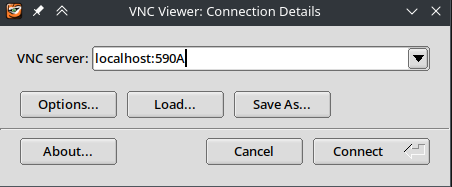
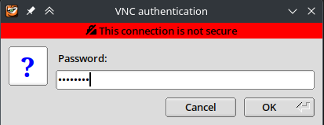

hyakvnc#
hyakvnc is a pip-installable script to create and manage VNC sessions running within an
Apptainer environment on a compute node.
Note
hyakvnc script is ran from the login node and will interact with Slurm to spawn a compute
node for interactive use.
Prerequisites#
On the user’s computer, we will need the following:
SSH client with port-forwarding capabilities
VNC client or viewer to interact with the remote graphical interface
for all platforms, we recommend TigerVNC viewer:
macOS:
brew install --cask tigervnc-viewerWindows (x86_64): https://sourceforge.net/projects/tigervnc/files/stable/1.13.1/vncviewer64-1.13.1.exe/download
Installing hyakvnc#
From the login node, run the following to install or upgrade hyakvnc:
python3.6 -m pip install --upgrade pip
python3.6 -m pip install git+https://github.com/uw-psych/hyakvnc
VNC Apptainer#
A VNC Apptainer hosts the graphical desktop interface, CLI/GUI tools, and libraries needed to run programs.
At a bare minimum for hyakvnc, this container must have the following:
TigerVNC server (with
vncserverandvncpasswd)a desktop environment (such as XFCE4)
Tip
For a more functional environment, we recommend installing additional tools and libraries as if it were your own computer.
Note
A container can be maintained by individual users or entire groups.
Building a VNC Apptainer#
Here, we will build a VNC Apptainer from uw-psych/hyak_vnc_apptainer. Feel free to make adjustments to these recipes as needed.
From the login node, get an interactive node for 4 hours:
[NetID@klone-login01 ~]$ salloc -A mygroup -p compute -c 4 --mem=8G --time=4:00:00
Clone the repository to a directory with around 4GB of free space:
cd some_place_with_space
git clone https://github.com/uw-psych/hyak_vnc_apptainer
cd hyak_vnc_apptainer
Run the following to build a
rockylinux8container:
module load apptainer/1.1.5
make CONT_NAME=rockylinux8
Get the path to the container and xstartup:
pwd rockylinux8/rockylinux8.sif
pwd xfce4_config/xstartup
Creating a VNC session#
From the login node shell, we will need to use
hyakvnc createcommand to start the VNC session with compute resources. As an example, to create a VNC session running on ourrockylinux8container on a compute node reserved for 10 hours with specified amount of compute resources, run the following:
hyakvnc create \
-A mygroup \
-p compute \
--cpus 16 \
--gpus 0 \
--mem 32G \
--time 10 \
--container /path/to/hyak_vnc_apptainer/rockylinux8/rockylinux8.sif \
--xstartup /path/to/hyak_vnc_apptainer/xfce4_config/xstartup
On initial use, accept to create an SSH key and set a VNC password when prompted. If you
want to reset your VNC password, run hyakvnc set-passwd from the login node.
Create a port forward to Klone to access the VNC session.
If hyakvnc create was successful, it should print additional steps to setup a port forward and
to connect to the VNC session.
...
=====================
Run the following in a new terminal window:
ssh -N -f -L 590A:127.0.0.1:590B UWNetID@klone.hyak.uw.edu
then connect to VNC session at localhost:590A
=====================
In this example, we want to create a port forward to Klone with the source port 590A and
destination at 127.0.0.1:590B or localhost:590B.
Create a new terminal window on your local computer and run the ssh command as instructed by
hyakvnc create:
ssh -N -f -L 590A:127.0.0.1:590B UWNetID@klone.hyak.uw.edu
TODO
TODO
Open TigerVNC Viewer and connect to the VNC session at
localhost:590Aas instructed byhyakvnc create:

Login with your VNC password:

If successful, you should be greeted to a graphical desktop interface.
Checking active VNC sessions#
To print details of active VNC sessions, including the amount of time left and the port forward
command, run hyakvnc status from the login node.
Active hyakvnc jobs:
Job ID: AAAAAAAA
SubNode: n3301
Time left: 2-06:00:16
VNC active: True
VNC display number: 2
VNC port: 5902
Mapped LoginNode port: 5900
Run command: ssh -N -f -L 5900:127.0.0.1:5900 UWNetID@klone.hyak.uw.edu
Job ID: BBBBBBBB
SubNode: n3301
Time left: 2-01:24:25
VNC active: True
VNC display number: 1
VNC port: 5901
Mapped LoginNode port: 5911
Run command: ssh -N -f -L 5911:127.0.0.1:5911 UWNetID@klone.hyak.uw.edu
Job ID: CCCCCCCC
SubNode: g3071
Time left: 15:07:56
VNC active: True
VNC display number: 1
VNC port: 5901
Mapped LoginNode port: 5902
Run command: ssh -N -f -L 5902:127.0.0.1:5902 UWNetID@klone.hyak.uw.edu
Closing VNC sessions#
To close all VNC sessions, run hyakvnc kill-all from the login node.
To close a specific VNC session, find its Job ID with hyakvnc status, then run
hyakvnc kill <job_ID> from the login node.